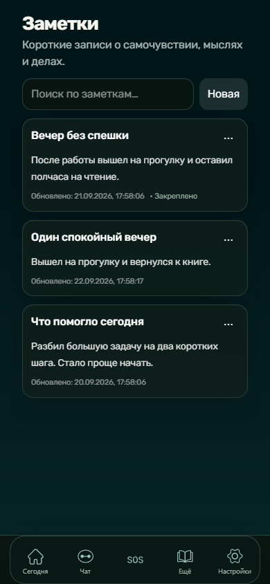

Все проекты ↗ / Telegram Mini App / portfolio demo
Один шаг сегодня.
СТЕП — приложение для ежедневной практики. В walkthrough показаны реальные экраны локальной demo-копии: календарь, заметки, цели, статья с отметкой, дерево, чат и настройки.




Показаны вымышленные demo-данные в изолированном профиле. Ответ чата — сохранённый шаблон, не подключённая AI-модель. Визуальные доработки сделаны для портфолио и отделены от исходного продукта в описании кейса и проверке.